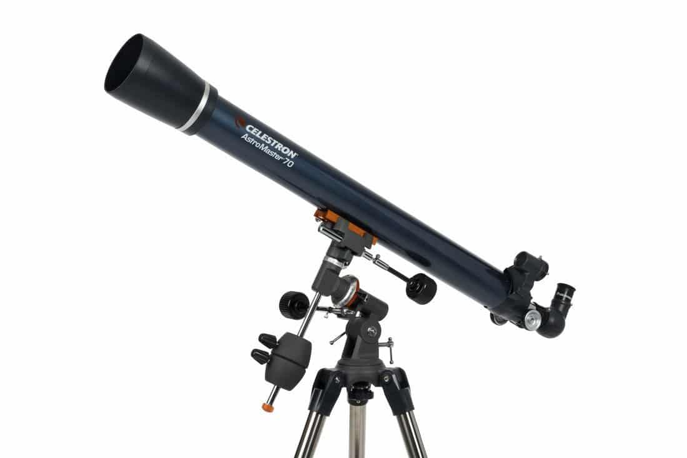
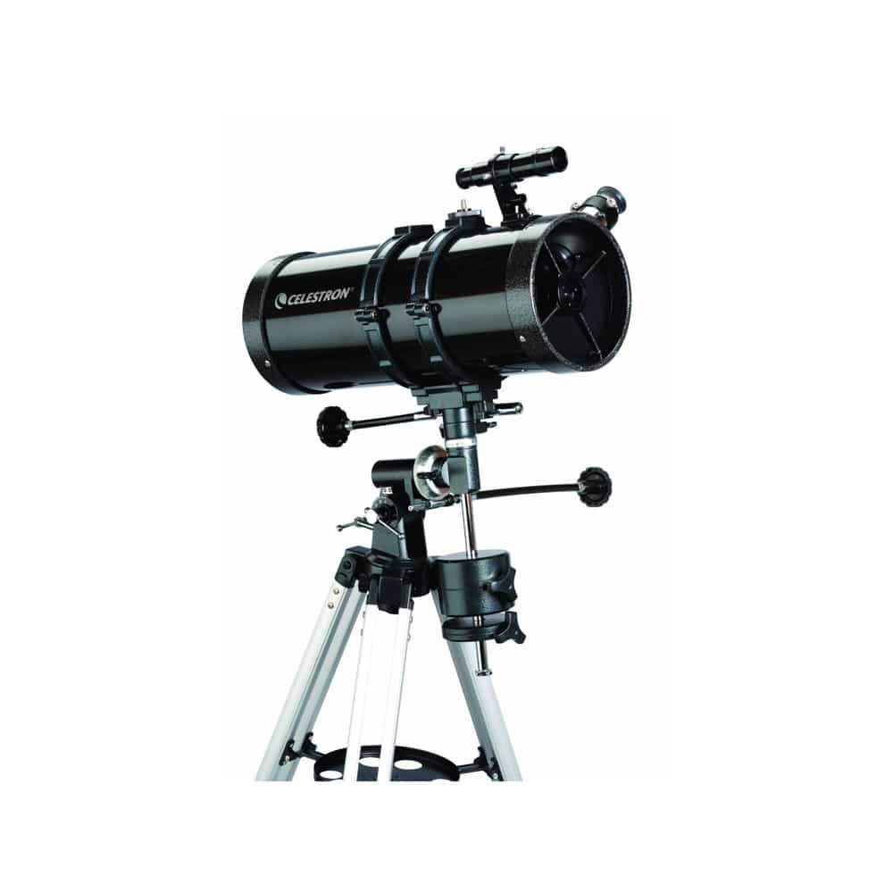

Nuestros Productos
Consulta nuestro pequeño pero potente catálogo
Celestron 70EQ
El Celestron 70EQ es un telescopio refractor diseñado para satisfacer las necesidades tanto de astrónomos principiantes como de entusiastas más experimentados.

- ESPECIFICACIONES:
- Diseño óptico: Refractor acromático totalmente tratado
- Apertura: 70mm
- Distancia focal: 900mm
- Relación focal: f/13
- Buscador: Preinstalado, con puntero luminoso
- Trípode: De acero
- ...
Powerseeker 127EQ
El Celestron PowerSeeker 127EQ es un telescopio reflector que combina un diseño óptico sólido con características que lo hacen ideal tanto para principiantes como para astrónomos aficionados más experimentados.

- ESPECIFICACIONES:
- Diseño óptico: Reflector Newton
- Apertura: 127mm
- Distancia focal: 1000mm
- Relación focal: f/7,87
- Buscador: 5x24mm con abrazadera
- Trípode: De aluminio
- ...
Nextar Evolution 8
El Celestron NexStar Evolution 8 es un telescopio Schmidt-Cassegrain de 8 pulgadas con una montura altazimutal informatizada y una serie de características innovadoras que lo hacen destacar entre los telescopios de su clase.

- ESPECIFICACIONES:
- Diseño óptico: Schmidt-Cassegrain
- Apertura: 203mm
- Distancia focal: 2032mm
- Relación focal: f/10
- Enfoque: Desplazamiento del espejo primario
- Trípode: De acero preensamblado y extensible
- ...
Nuevos productos en camino
| Nombre | Descripción | Precio |
|---|---|---|
| NexStar Evolution 6 | Telescopio computarizado compacto y portátil con una apertura de 150 mm y características avanzadas de seguimiento automático. | 1199,99€ |
| Celestron NexStar 8SE | Telescopio Schmidt-Cassegrain con montura altazimutal informatizada y óptica de calidad. Ideal para observaciones planetarias y de cielo profundo. | 1459,99€ |
| Celestron Advanced VX 6" | Telescopio Newtoniano con montura ecuatorial avanzada que proporciona una plataforma estable para la observación astronómica. | 900€ |
| Celestron CPC 800 XLT | Telescopio Schmidt-Cassegrain con montura altazimutal informatizada y GPS integrado para una configuración rápida. | 2349,99€ |
| Celestron AstroMaster 130EQ | Telescopio Newtoniano con montura ecuatorial que proporciona una introducción a la observación astronómica de calidad. | 250€ |
Consulte alguna duda
¡Adquirir el Celestron 70EQ ha sido una experiencia extraordinaria! Desde el momento en que lo recibí, quedé impresionado por su calidad y rendimiento. La montura ecuatorial es robusta y fácil de ajustar, lo que me permite seguir los objetos celestes con precisión. El telescopio en sí ofrece imágenes claras y nítidas de la luna, planetas y objetos de cielo profundo. La apertura de 70mm es ideal para observaciones planetarias y de espacio profundo, y he podido capturar detalles sorprendentes de nebulosas y cúmulos estelares. La calidad óptica del telescopio es excelente, y la óptica revestida proporciona imágenes brillantes y contrastadas incluso en condiciones de poca luz. Además, la facilidad de transporte y montaje lo convierte en el compañero perfecto para mis aventuras astronómicas. En resumen, el Celestron 70EQ es un telescopio perfecto para entusiastas principiantes e intermedios que buscan un equipo confiable y de alta calidad a un precio asequible. Lo recomendaría encarecidamente a cualquier persona que desee explorar el cosmos desde su propio patio trasero. ¡Una compra que no me arrepentiré de haber hecho!
El Nexstar Evolution 8 es simplemente asombroso. Su diseño inteligente y su facilidad de uso lo hacen perfecto tanto para principiantes como para astrónomos más experimentados. La calidad de las im&ágenes que proporciona es excepcional, y la capacidad de controlarlo de forma inalámbrica a través de la aplicación SkyPortal es realmente conveniente. Definitivamente recomendaría este telescopio a cualquiera que esté buscando una experiencia de observación celestial de primera clase